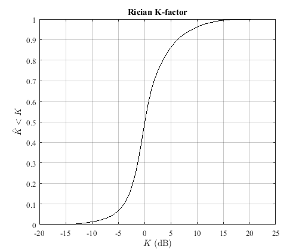
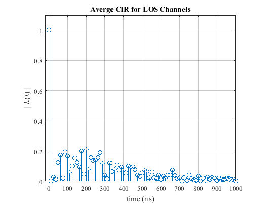
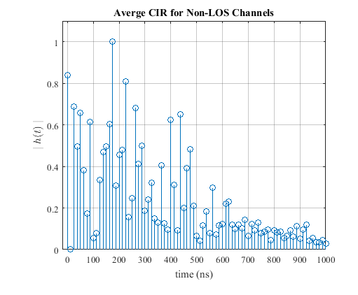
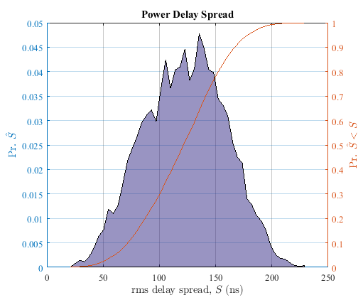
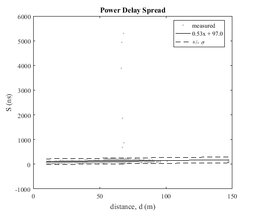
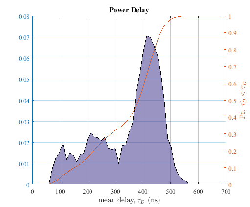

<!DOCTYPE html
  PUBLIC "-//W3C//DTD HTML 4.01 Transitional//EN">
<html><head>
      <meta http-equiv="Content-Type" content="text/html; charset=utf-8">
   <!--
This HTML was auto-generated from MATLAB code.
To make changes, update the MATLAB code and republish this document.
      --><title>make_report</title><meta name="generator" content="MATLAB 9.0"><link rel="schema.DC" href="http://purl.org/dc/elements/1.1/"><meta name="DC.date" content="2016-10-19"><meta name="DC.source" content="make_report.m"><style type="text/css">
html,body,div,span,applet,object,iframe,h1,h2,h3,h4,h5,h6,p,blockquote,pre,a,abbr,acronym,address,big,cite,code,del,dfn,em,font,img,ins,kbd,q,s,samp,small,strike,strong,sub,sup,tt,var,b,u,i,center,dl,dt,dd,ol,ul,li,fieldset,form,label,legend,table,caption,tbody,tfoot,thead,tr,th,td{margin:0;padding:0;border:0;outline:0;font-size:100%;vertical-align:baseline;background:transparent}body{line-height:1}ol,ul{list-style:none}blockquote,q{quotes:none}blockquote:before,blockquote:after,q:before,q:after{content:'';content:none}:focus{outine:0}ins{text-decoration:none}del{text-decoration:line-through}table{border-collapse:collapse;border-spacing:0}

html { min-height:100%; margin-bottom:1px; }
html body { height:100%; margin:0px; font-family:Arial, Helvetica, sans-serif; font-size:10px; color:#000; line-height:140%; background:#fff none; overflow-y:scroll; }
html body td { vertical-align:top; text-align:left; }

h1 { padding:0px; margin:0px 0px 25px; font-family:Arial, Helvetica, sans-serif; font-size:1.5em; color:#d55000; line-height:100%; font-weight:normal; }
h2 { padding:0px; margin:0px 0px 8px; font-family:Arial, Helvetica, sans-serif; font-size:1.2em; color:#000; font-weight:bold; line-height:140%; border-bottom:1px solid #d6d4d4; display:block; }
h3 { padding:0px; margin:0px 0px 5px; font-family:Arial, Helvetica, sans-serif; font-size:1.1em; color:#000; font-weight:bold; line-height:140%; }

a { color:#005fce; text-decoration:none; }
a:hover { color:#005fce; text-decoration:underline; }
a:visited { color:#004aa0; text-decoration:none; }

p { padding:0px; margin:0px 0px 20px; }
img { padding:0px; margin:0px 0px 20px; border:none; }
p img, pre img, tt img, li img, h1 img, h2 img { margin-bottom:0px; } 

ul { padding:0px; margin:0px 0px 20px 23px; list-style:square; }
ul li { padding:0px; margin:0px 0px 7px 0px; }
ul li ul { padding:5px 0px 0px; margin:0px 0px 7px 23px; }
ul li ol li { list-style:decimal; }
ol { padding:0px; margin:0px 0px 20px 0px; list-style:decimal; }
ol li { padding:0px; margin:0px 0px 7px 23px; list-style-type:decimal; }
ol li ol { padding:5px 0px 0px; margin:0px 0px 7px 0px; }
ol li ol li { list-style-type:lower-alpha; }
ol li ul { padding-top:7px; }
ol li ul li { list-style:square; }

.content { font-size:1.2em; line-height:140%; padding: 20px; }

pre, code { font-size:12px; }
tt { font-size: 1.2em; }
pre { margin:0px 0px 20px; }
pre.codeinput { padding:10px; border:1px solid #d3d3d3; background:#f7f7f7; }
pre.codeoutput { padding:10px 11px; margin:0px 0px 20px; color:#4c4c4c; }
pre.error { color:red; }

@media print { pre.codeinput, pre.codeoutput { word-wrap:break-word; width:100%; } }

span.keyword { color:#0000FF }
span.comment { color:#228B22 }
span.string { color:#A020F0 }
span.untermstring { color:#B20000 }
span.syscmd { color:#B28C00 }

.footer { width:auto; padding:10px 0px; margin:25px 0px 0px; border-top:1px dotted #878787; font-size:0.8em; line-height:140%; font-style:italic; color:#878787; text-align:left; float:none; }
.footer p { margin:0px; }
.footer a { color:#878787; }
.footer a:hover { color:#878787; text-decoration:underline; }
.footer a:visited { color:#878787; }

table th { padding:7px 5px; text-align:left; vertical-align:middle; border: 1px solid #d6d4d4; font-weight:bold; }
table td { padding:7px 5px; text-align:left; vertical-align:top; border:1px solid #d6d4d4; }


  </style></head><body><div class="content"><pre class="codeoutput">Mat File: AAPlantD1_2GHz_TX1_hpol_run4
Frequency: 2.245000e+00
Location: AA Plant Day 1 at Automotive Assembly Plant
RX Antenna: Omni-directional, Cross Pol
RX Antenna Gain: -4.200000e+00
TX Antenna: Omni-directional, V Pol
TX Antenna Gain: 2.900000e+00
TX Power, Watts: 1.500000e+00
PN Oversample Factor: 
Sample rate, MHz: P
Frequency: 2.245000e+00
</pre>       <p class="footer"><br><a href="http://www.mathworks.com/products/matlab/">Published with MATLAB&reg; R2016a</a><br></p></div><!--
##### SOURCE BEGIN #####
% Produce Report on all measurements
% Author: Rick Candell
% Organization: National Institute of Standards and Technology
% Email: rick.candell@nist.gov


top_dirs = { 'test_report'};
% top_dirs = { 'AAplant', 'Boulder', 'GBurg'};

for ii = 1:length(top_dirs)
    
    cd(top_dirs{ii})
    mat_files = dir(['.\*_pp.mat']);
    NN = length(mat_files);
    
    for jj = 1:NN
        
        mat_fname = mat_files(jj).name;
        mat_root = strrep(mat_fname,'_pp.mat','');
        
        % load the stats file
        stats_fname = ['.\stats\' mat_root '_pp__channel_stats.mat'];
        stats = load(stats_fname);
        meta = stats.stats.meta;
        fprintf('Mat File: %s\n', meta.MatFile_str);
        fprintf('Frequency: %s\n', meta.Frequency_GHz_num);
        fprintf('Location: %s\n', meta.Location_str);
        fprintf('RX Antenna: %s\n', meta.ReceiverAntenna_str);
        fprintf('RX Antenna Gain: %s\n', meta.ReceiverAntennaGain_dBi_num);
        fprintf('TX Antenna: %s\n', meta.TransmitterAntenna_str);
        fprintf('TX Antenna Gain: %s\n', meta.TransmitterAntennaGain_dBi_num);
        fprintf('TX Power, Watts: %s\n', meta.TransmitterPower_watts_num);
        fprintf('PN Oversample Factor: %s\n', meta.PNOversample_num);
        fprintf('Sample rate, MHz: %s\n', meta.SampleRate_MHz_num);
        fprintf('Frequency: %s\n', meta.Frequency_GHz_num);

        % load plots
        fig_files = dir(['.\figs\' mat_root '*']);
        KK = length(fig_files);
        for kk = 1:KK
            fig_fname = fig_files(kk).name;
            title_str = [];
            if     ~isempty(strfind(fig_fname,'avgcir_los'))
                title_str = 'Averge CIR for LOS Channels';
            elseif ~isempty(strfind(fig_fname,'avgcir_nlos'))
                title_str = 'Averge CIR for Non-LOS Channels';
            elseif ~isempty(strfind(fig_fname,'plvacq'))
                title_str = 'Path Loss versus Acquisition Order';
            elseif ~isempty(strfind(fig_fname,'__ds'))
                title_str = 'Power Delay Spread';
            elseif ~isempty(strfind(fig_fname,'__du'))
                title_str = 'Power Delay';
            elseif ~isempty(strfind(fig_fname,'__Kcdf'))
                title_str = 'Rician K-factor';
            elseif ~isempty(strfind(fig_fname,'__pl'))
                title_str = 'Path Loss ersus Distance';
            end
            fig_path = ['.\figs\' fig_fname];
            if ~isempty(title_str)
                fig = openfig(fig_path);
                title(title_str);
                snapnow;
                close(fig)
            end
        end
    
    end
    
    % summary report for site
    
    cd('..\')

end


##### SOURCE END #####
--></body></html>